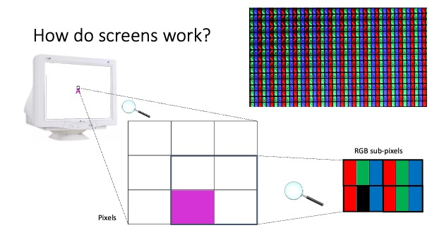

Please install this app to your device:
- iPhone: Press the 'Share'
 button and click 'Add to home screen'.
button and click 'Add to home screen'. - Android: Press the 'More'
 button and click 'Install app'/'Add to home screen', or click the button below.
button and click 'Install app'/'Add to home screen', or click the button below. - Chrome on Computer: please click the install
 button in your address bar.
button in your address bar.
Please maximise your window, or return to or reinstall the app version of this website.
This app is only available in landscape mode. Please rotate your phone.
ADULT INFORMATION & CONSENT SHEET
Thank you for carefully reading this information sheet, a copy of which you can keep for your records. This study is being conducted by Yesesvi Konakanchi (yk357@sussex.ac.uk) and Dr John Maule (j.maule@sussex.ac.uk) from the School of Psychology, University of Sussex, who are happy to be contacted if you have any questions.
INVITATION TO TAKE PART
You are being invited to take part in a research study to further our understanding of colour vision. The research is being funded by the School of Psychology, University of Sussex.
WHY HAVE I BEEN INVITED FOR TESTING AND WHAT WILL I DO?
We are testing adults colour perception on their phones. The experiment will take no more than 30 minutes. It involves making remote colour adjustments on your mobile device, followed by a short questionnaire.
For the study, you will be required to download an app on your mobile device by following this link – https://sussex-psychology-software-team.github.io/Colour-Adjust/colour-adjust.html. Although it is preferred to complete the study on the phone, you can still follow the link on a computer device and complete the study, if so, please state in the questionnaire that you are not doing the study on your phone.
After completing the task, you will be invited to do a small calibration procedure which measures the display range of your mobile device. The procedure would be quick and would have no effect on the device’s performance. This is optional and would only be conducted with your consent.
Additionally, you have the option to choose to participate without your data being recorded. Participation in this study is part of your practical learning of psychology experiments but is not binding to your data being collected. All data collection is optional and consensual and choosing not to submit your data will not affect your grades or progress.
WHAT WILL HAPPEN TO THE RESULTS AND MY PERSONAL INFORMATION?
The results of this research may be written into a scientific report for a psychology dissertation and/or publication. We anticipate being able to provide a summary of our findings on request from January 2025.
Your privacy will be ensured in the way described in the consent information below. Please read this information carefully and then, if you wish to take part, please proceed to show you have fully understood this sheet, and that you consent to take part in the study as it is described here.
You will generate your own participant code by giving us four pieces of information to form a code which will be unique to you but could not identify you. This code will be used to pair your data from the online task with measurements from your device. The use of this code does not mean that your data is strictly anonymous but instead that the data cannot be attributed to a specific participant without the use of additional information. This additional information is only available if you provide it in future (e.g. you wish to withdraw). Your consent will be recorded with your personal code and responses.
All data will be transmitted from the JsPsych interface of the online task through the Open Science Framework, a data management system. Raw data will be stored in a private OSF repository, available only to the research team. Both comply with the General Data Protection Regulation (EU) 2016/679 and UK data protection legislation will only be accessible to members of the project team. If any data is made available to the wider scientific community your experimental data may be available with your participant code (pseudonym), but never your name. This means that no data provided can be identifiable back to you.
If you have concerns about the collection, storage, or use of your personal data, you can contact University of Sussex Data Protection Officer: dpo@sussex.ac.uk.
Who has approved this study?
The research has been approved by the Science & Technology Cross-Schools Research Ethics Committee (C-REC) ethical review process. (ER/YK357/4)
Contact for Further Information
If you have any concerns relating to this project please contact Yesesvi Konakanchi (yk357@sussex.ac.uk), Dr John Maule (j.maule@sussex.ac.uk) and/or the Chair of the Science and Technology Cross Schools Research Ethics Committee, (crecscitec@sussex.ac.uk).
Insurance
The University of Sussex has insurance in place to cover its legal liabilities in respect of this study.
CONSENT
- I understand that by signing below I am agreeing to take part in the University of Sussex research described here, and that I have read and understood this information sheet.
- I understand that my participation is entirely voluntary, that I can choose not to participate in part or all of the study, and that I can withdraw at any stage of testing without having to give a reason and without being penalised in any way (e.g., if I am a student, my decision whether or not to take part will not affect my grades or personal record).
- I understand I can request without penalty that my contact details can be withdrawn and deleted after testing is complete. Your experimental data (the responses we record during the study) can be withdrawn prior to data analysis (4 weeks after date of testing).
- I understand that my personal data will be used for the purposes of this research study and will be handled in accordance with Data Protection legislation. I understand that the University’s Privacy Notice provides further information on how the University uses personal data in its research.
- I understand that my collected data will be stored using only my research participant code I understand my data, identified by participant code only, may be made publicly available through online data repositories or at the request of other researchers.
- I understand that my participation will remain confidential in any written reports of this research, and that no information I disclose will lead to the identification in those reports of any individual either by the researchers or by any other party, without first obtaining my written permission.
Do we remember the colours of familiar devices?
Yesesvi Konakanchi & Dr. John MauleStatistical Perception Lab, University of Sussex
It has been shown that we build up specific memory for the colours of familiar objects. Hansen et al. (2006) showed that people perceive a grey banana as slightly yellow, illustrating that perceptual experience (e.g. seeing many bananas over your lifetime) influences our expectations about the world.
Adults spend on average over 6 hours every day using screens (Kemp, 2023). This means that for over 1/3rd of our waking hours we are seeing an interacting with a virtual world - one in which the visual properties are quite different from those of the real world. Screens constrain the range of colours which we see, and different screens will do this slightly differently. Past research has shown that the perception of white is affected by whether the incoming stimulus is perceived to be a screen or a real material surface (Wei, Chen, & Luo, 2018). However, it is an open and unexplored question if people can form priors to the colours rendered on familiar displays. This project is investigating how familiar people become with a screen that they use frequently, and ultimately whether this affects their perception of colour on that screen.
Digital screens are rows of pixels, each containing subpixels with red, green and blue, primaries (figure 1). Different combinations of these primaries means your screen can display a continuous range of colours. This is called the gamut. The range of colours which your screen can display is smaller than the range of colours in the real-world, and yet we generally do not notice this reduction in colour for images representing the real world. Due to technology differences, different displays have different gamuts. This means that the representation of colour on one screen does not necessarily match that on another (see figure 2). Red for one screen can be very different from the red of another.
The experiment you have just taken part in uses a psychophysical paradigm called the method of adjustment. Observers complete trials where they can adjust a stimulus to meet a certain criterion according to their own perception. We are gathering settings of unique hues (red, green, yellow and blue) (Hurvich & Jameson, 1957) and of unique white (Bosten et al., 2015). These are measures of subjective colour appearance. At the same time we are gathering measurements of a sub-sample of participants’ phones to help us better characterise the variation across devices. We are also measuring the ambient lighting at your desks. From the data we will analyse whether colour settings are determined more strongly by the immediate environment or by your prior knowledge of your device display.
If participants have priors for their own devices, their colour adjustments would be closer to their device’s RGB colours than to each other’s settings (which come from shared environments and culture).
Since we expect to obtain a large sample of data (approx. N=300-400) we will have high statistical power to detect effects. The size of the sample also means we will be able to explore further the individual differences. We will use clustering techniques such as k-means clustering to identify groups of participants with similar colour settings, and see whether they have things in common like phone manufacturer or operating system.
The results may illustrate the power of implicit learning and suggest that we understand virtual worlds via our experiences of the real world. It would suggest implicit understanding of how screens work, even in the absence of explicit knowledge or training.
Colour and vision scientists would need to think hard about what it means to present stimuli on a screen – are participants making judgements of the colour/stimulus alone, or through a lens of expectation about how displays warp the visual experience? It would emphasise the importance of not doing colour-critical work "by eye" and the need for robust calibration in the design industry, and display manufacturers will be interested in the time-scale over which people adapt to a new display technology.
In line with open science practices, we have pre-registered the design and analyses for this study, prior to gathering the data.
 Figure 1 - Depicts the pixel and sub-pixel distribution from a screen. The combinations of the light produced by the sub pixels are responsible for image formation on screens. Figure 2 - This diagram shows the rendering capabilities of different screens each represented by a different triangle.
The colours inside the triangle can be produced by the screen – the colours outside are physically possible but cannot be produced by the screen.
Figure 2 - This diagram shows the rendering capabilities of different screens each represented by a different triangle.
The colours inside the triangle can be produced by the screen – the colours outside are physically possible but cannot be produced by the screen.
Hansen, T., Olkkonen, M., Walter, S., & Gegenfurtner, K. R. (2006). Memory modulates color appearance. Nature Neuroscience, 9(11), 1367-1368. https://doi.org/10.1038/nn1794
Wei, M., Chen, S., & Luo, M. R. (2018, November). Effect of stimulus luminance and adapting luminance on viewing mode and display white appearance. In Color and Imaging Conference (Vol. 26, pp. 308-312). Society for Imaging Science and Technology.
Hurvich, L. M., & Jameson, D. (1957). An opponent-process theory of color vision. Psychological review, 64(6p1), 384.
Bosten, J. M., Beer, R. D., & MacLeod, D. I. A. (2015). What is white?. Journal of vision, 15(16), 5-5.
Kemp, S. (2023, January 26). Digital 2023: Global Overview Report. DataReportal. https://datareportal.com/reports/digital-2023-global-overview-report